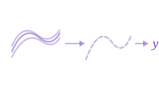

Functional Data Analysis in Rust
fdars is a comprehensive R toolkit for functional data analysis powered by a high-performance Rust backend. Treat entire curves, spectra, and trajectories as single observations — then smooth, align, decompose, and analyze them with a consistent, pipe-friendly API.
Learn
Get started, preprocess, and simulate functional data.

Introduction to fdars
Get started with functional data objects and basic operations

Custom Plotting
Customize curve visualizations with ggplot2

Introduction to Smoothing
Smooth noisy curves using kernel and spline methods

Working with Derivatives
Compute and analyze functional derivatives

Simulation Toolbox
Generate synthetic functional data

Irregular Sampling
Work with irregularly sampled and sparse data
Represent
Decompose, transform, rank, and measure functional data.

Functional PCA
Extract dominant modes of variation

Basis Representation
Expand curves in B-spline and Fourier bases

Andrews Curves
Transform multivariate data into functional curves

Depth Functions
Rank curves from center outward using statistical depth

Streaming Depth
Monitor depth in real-time as new curves arrive

Distance Metrics
Measure similarity with Lp, DTW, and elastic distances
Align
Register and align curves to remove phase variability.

Elastic Alignment
Remove phase variability via SRSF

Landmark Registration
Align curves by matching peaks and valleys

TSRVF (Tangent Space)
Project aligned curves into a linear tangent space

Comparing Methods
Compare alignment methods side-by-side
Analyze
Infer, classify, predict, and model functional data.

Tolerance Bands
Construct tolerance and confidence bands

Equivalence Testing
Test functional equivalence between groups

Clustering
Group similar curves with k-means and fuzzy c-means

Outlier Detection
Identify anomalous curves using depth

Regression
Predict scalar outcomes from functional predictors

Seasonal Analysis
Detect and decompose seasonal patterns

Covariance Functions
Build GP models with composable kernels